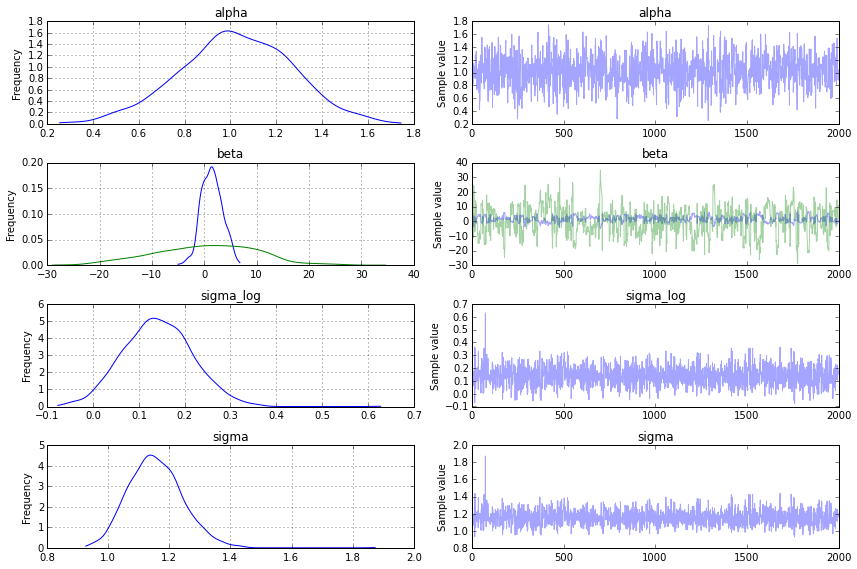

Probabilistic Programming in Python using PyMC
Authors: John Salvatier, Thomas V. Wiecki, Christopher Fonnesbeck
Introduction
Probabilistic Programming (PP) allows flexible specification of statistical Bayesian models in code. PyMC3 is a new, open-source PP framework with an intutive and readable, yet powerful, syntax that is close to the natural syntax statisticians use to describe models. It features next-generation Markov chain Monte Carlo (MCMC) sampling algorithms such as the No-U-Turn Sampler (NUTS; Hoffman, 2014), a self-tuning variant of Hamiltonian Monte Carlo (HMC; Duane, 1987). This class of samplers work well on high dimensional and complex posterior distributions and allows many complex models to be fit without specialized knowledge about fitting algorithms. HMC and NUTS take advantage of gradient information from the likelihood to achieve much faster convergence than traditional sampling methods, especially for larger models. NUTS also has several self-tuning strategies for adaptively setting the tunable parameters of Hamiltonian Monte Carlo, which means you usually don't need to have specialized knowledge about how the algorithms work. PyMC3, Stan (Stan Development Team, 2014), and the LaplacesDemon package for R are currently the only PP packages to offer HMC.
Probabilistic programming in Python confers a number of advantages including multi-platform compatibility, an expressive yet clean and readable syntax, easy integration with other scientific libraries, and extensibility via C, C++, Fortran or Cython. These features make it relatively straightforward to write and use custom statistical distributions, samplers and transformation functions, as required by Bayesian analysis.
While most of PyMC3's user-facing features are written in pure Python, it leverages Theano (Bergstra et al., 2010) to transparently transcode models to C and compile it to machine code, thereby boosting performance. Theano is a library that allows expressions to be defined using generalized vector data structures called tensors, which are tightly integrated with the popular NumPy ndarray data structure, and similarly allows for broadcasting and advanced indexing, just as NumPy arrays do. Theano also automatically optimizes the likelihood's computational graph for speed and provides simple GPU integration.
Here, we present a primer on the use of PyMC3 for solving general Bayesian statistical inference and prediction problems. We will first see the basics of how to use PyMC3, motivated by a simple example: installation, data creation, model definition, model fitting and posterior analysis. Then we will cover two case studies and use them to show how to define and fit more sophisticated models. Finally we will show how to extend PyMC3 and discuss other useful features: the Generalized Linear Models subpackage, custom distributions, custom transformations and alternative storage backends.
Installation
Running PyMC3 requires a working Python interpreter, either version 2.7 (or more recent) or 3.4 (or more recent); we recommend that new users install version 3.4. A complete Python installation for Mac OSX, Linux and Windows can most easily be obtained by downloading and installing the free Anaconda Python Distribution by ContinuumIO.
PyMC3 can also be installed manually using pip (https://pip.pypa.io/en/latest/installing.html):
pip install git+https://github.com/pymc-devs/pymc3
PyMC3 depends on several third-party Python packages which will be automatically installed when installing via pip. The four required dependencies are: Theano, NumPy, SciPy, and Matplotlib. To take full advantage of PyMC3, the optional dependencies Pandas and Patsy should also be installed. These are not automatically installed, but can be installed by:
pip install patsy pandas
The source code for PyMC3 is hosted on GitHub at https://github.com/pymc-devs/pymc3 and is distributed under the liberal Apache License 2.0. On the GitHub site, users may also report bugs and other issues, as well as contribute code to the project, which we actively encourage.
A Motivating Example: Linear Regression
To introduce model definition, fitting and posterior analysis, we first consider a simple Bayesian linear regression model with normal priors for the parameters. We are interested in predicting outcomes
where
Generating data
We can simulate some artificial data from this model using only NumPy's random module, and then use PyMC3 to try to recover the corresponding parameters. We are intentionally generating the data to closely correspond the PyMC3 model structure.
import numpy as np
# Intialize random number generator
np.random.seed(123)
# True parameter values
alpha, sigma = 1, 1
beta = [1, 2.5]
# Size of dataset
size = 100
# Predictor variable
X1 = np.linspace(0, 1, size)
X2 = np.linspace(0,.2, size)
# Simulate outcome variable
Y = alpha + beta[0]*X1 + beta[1]*X2 + np.random.randn(size)*sigma
Here is what the simulated data look like. We use the pylab module from the plotting library matplotlib.
%matplotlib inline
import pylab as pl
fig, axes = pl.subplots(1, 2, sharex=True, figsize=(10,4))
axes[0].scatter(X1, Y)
axes[1].scatter(X2, Y)
axes[0].set_ylabel('Y'); axes[0].set_xlabel('X1'); axes[1].set_xlabel('X2');

Model Specification
Specifiying this model in PyMC3 is straightforward because the syntax is as close to the statistical notation. For the most part, each line of Python code corresponds to a line in the model notation above.
First, we import the components we will need from PyMC.
from pymc3 import Model, Normal, HalfNormal
Now we build our model, which we will present in full first, then explain each part line-by-line.
basic_model = Model()
with basic_model:
# Priors for unknown model parameters
alpha = Normal('alpha', mu=0, sd=10)
beta = Normal('beta', mu=0, sd=10, shape=2)
sigma = HalfNormal('sigma', sd=1)
# Expected value of outcome
mu = alpha + beta[0]*X1 + beta[1]*X2
# Likelihood (sampling distribution) of observations
Y_obs = Normal('Y_obs', mu=mu, sd=sigma, observed=Y)
The first line,
basic_model = Model()
creates a new Model object which is a container for the model random variables.
Following instantiation of the model, the subsequent specification of the model components is performed inside a with statement:
with basic_model:
This creates a context manager, with our basic_model as the context, that includes all statements until the indented block ends. This means all PyMC3 objects introduced in the indented code block below the with statement are added to the model behind the scenes. Absent this context manager idiom, we would be forced to manually associate each of the variables with basic_model right after we create them. If you try to create a new random variable without a with model: statement, it will raise an error since there is no obvious model for the variable to be added to.
The first three statements in the context manager:
alpha = Normal('alpha', mu=0, sd=10)
beta = Normal('beta', mu=0, sd=10, shape=2)
sigma = HalfNormal('sigma', sd=1)
create a stochastic random variables with a Normal prior distributions for the regression coefficients with a mean of 0 and standard deviation of 10 for the regression coefficients, and a half-normal distribution for the standard deviation of the observations,
We call the Normal constructor to create a random variable to use as a normal prior. The first argument is always the name of the random variable, which should almost always match the name of the Python variable being assigned to, since it sometimes used to retrieve the variable from the model for summarizing output. The remaining required arguments for a stochastic object are the parameters, in this case mu, the mean, and sd, the standard deviation, which we assign hyperparameter values for the model. In general, a distribution's parameters are values that determine the location, shape or scale of the random variable, depending on the parameterization of the distribution. Most commonly used distributions, such as Beta, Exponential, Categorical, Gamma, Binomial and many others, are available in PyMC3.
The beta variable has an additional shape argument to denote it as a vector-valued parameter of size 2. The shape argument is available for all distributions and specifies the length or shape of the random variable, but is optional for scalar variables, since it defaults to a value of one. It can be an integer, to specify an array, or a tuple, to specify a multidimensional array (e.g. shape=(5,7) makes random variable that takes on 5 by 7 matrix values).
Detailed notes about distributions, sampling methods and other PyMC3 functions are available via the help function.
help(Normal) #try help(Model), help(Uniform) or help(basic_model)
Help on class Normal in module pymc3.distributions.continuous:
class Normal(pymc3.distributions.distribution.Continuous)
| Normal log-likelihood.
|
| .. math::
ight\}
|
| Parameters
| ----------
| mu : float
| Mean of the distribution.
| tau : float
| Precision of the distribution, which corresponds to
| :math:`1/\sigma^2` (tau > 0).
| sd : float
| Standard deviation of the distribution. Alternative parameterization.
|
| .. note::
| - :math:`E(X) = \mu`
| - :math:`Var(X) = 1/ au`
|
| Method resolution order:
| Normal
| pymc3.distributions.distribution.Continuous
| pymc3.distributions.distribution.Distribution
| builtins.object
|
| Methods defined here:
|
| __init__(self, mu=0.0, tau=None, sd=None, *args, **kwargs)
|
| logp(self, value)
|
| ----------------------------------------------------------------------
| Methods inherited from pymc3.distributions.distribution.Distribution:
|
| __getnewargs__(self)
|
| default(self)
|
| get_test_val(self, val, defaults)
|
| ----------------------------------------------------------------------
| Class methods inherited from pymc3.distributions.distribution.Distribution:
|
| dist(*args, **kwargs) from builtins.type
|
| ----------------------------------------------------------------------
| Static methods inherited from pymc3.distributions.distribution.Distribution:
|
| __new__(cls, name, *args, **kwargs)
|
| ----------------------------------------------------------------------
| Data descriptors inherited from pymc3.distributions.distribution.Distribution:
|
| __dict__
| dictionary for instance variables (if defined)
|
| __weakref__
| list of weak references to the object (if defined)
Having defined the priors, the next statement creates the expected value mu of the outcomes, specifying the linear relationship:
mu = alpha + beta * X
This creates a deterministic random variable, which implies that its value is completely determined by its parents' values. That is, there is no uncertainty beyond that which is inherent in the parents' values. Here, mu is just the sum of the intercept alpha and the product of the slope beta and the predictor variable, whatever their values may be. PyMC3 random variables and data can be arbitrarily added, subtracted, divided, multiplied together and indexed-into to create new random variables. This allows for great model expressivity. Many common mathematical functions like sum, sin, exp and linear algebra functions like dot (for inner product) and inv (for inverse) are also provided.
The final line of the model, defines Y_obs, the sampling distribution of the outcomes in the dataset.
Y_obs = Normal('Y_obs', mu=mu, sd=sigma, observed=Y)
This is a special case of a stochastic variable that we call an observed stochastic, and represents the data likelihood of the model. It is identical to a standard stochastic, except that its observed argument, which passes the data two the variable, indicates that the values for this variable were observed, and should not be changed by any fitting algorithm applied to the model. The data can be passed in the form of either a numpy.ndarray or pandas.DataFrame object.
Notice that, unlike for the priors of the model, the parameters for the normal distribution of Y_obs are not fixed values, but rather are the deterministic object mu and the stochastic sigma. This creates parent-child relationships between the likelihood and these two variables.
Model fitting
Having completely specified our model, the next step is to obtain posterior estimates for the unknown variables in the model. Ideally, we could calculate the posterior analytically, but for most non-trivial models, this is not feasible. We will consider two approaches, whose appropriateness depends on the structure of the model and the goals of the analysis: finding the maximum a posteriori (MAP) point using optimization methods, and computing summaries based on samples drawn from the posterior distribution using Markov Chain Monte Carlo (MCMC) sampling methods.
Maximum a posteriori methods
The maximum a posteriori (MAP) estimate for a model, is the mode of the posterior distribution and is generally found using numercal optimization methods. This is often fast and easy to do, but only gives a point estimate for the parameters and can be biased if the mode isn't representative of the distribution. PyMC3 provides this functionality with the find_MAP function.
Below we find the MAP for our original model. The MAP is returned as a parameter point, which is always represented by a Python dictionary of variable names to NumPy arrays of parameter values.
from pymc3 import find_MAP
map_estimate = find_MAP(model=basic_model)
print(map_estimate)
{'sigma': array(1.1211859035810363), 'beta': array([ 1.4679294 , 0.29358588]), 'alpha': array(1.0136583610288663)}
By default, this uses Broyden–Fletcher–Goldfarb–Shanno (BFGS) algorithm to find the maximum of the log-posterior but also allows selection of other optimization algorithms from the scipy.optimize module. For example, below we use Powell's method to find the MAP.
from scipy import optimize
map_estimate = find_MAP(model=basic_model, fmin=optimize.fmin_powell)
print(map_estimate)
{'sigma': array(1.1214023015580523), 'beta': array([ 1.1284382, 1.9605768]), 'alpha': array(1.015718140050394)}
It is important to note that the MAP estimate is not always reasonable, especially if the mode is at an extreme. This can be a subtle issue; with high dimensional posteriors, one can have areas of extremely high density but low total probability because the volume is very small. This will often occur in hierarchical models with the variance parameter for the random effect. If the individual group means are all the same, the posterior will have near infinite density if the scale parameter for the group means is almost zero, even though the probability of such a small scale parameter will be small since the group means must be extremely close together.
Most techniques for finding the MAP estimate also only find a local optimium (which is often good enough), but can fail badly for multimodal posteriors if the different modes are meaningfully different.
Sampling methods
Though finding the MAP is a fast and easy way of obtaining estimates of the unknown model parameters, it is limited because there is no associated estimate of uncertainty produced with the MAP estimates. Instead, a simulation-based approach such as Markov chain Monte Carlo (MCMC) can be used to obtain a Markov chain of values that, given the satisfaction of certain conditions, are indistinguishable from samples from the posterior distribution.
To conduct MCMC sampling to generate posterior samples in PyMC3, we specify a step method object that corresponds to a particular MCMC algorithm, such as Metropolis, Slice sampling, or the No-U-Turn Sampler (NUTS). PyMC3's step_methods submodule contains the following samplers: NUTS, Metropolis, Slice, HamiltonianMC, and BinaryMetropolis.
Gradient-based sampling methods
PyMC3 has the standard sampling algorithms like adaptive Metropolis-Hastings and adaptive slice sampling, but PyMC3's most capable step method is the No-U-Turn Sampler. NUTS is especially useful on models that have many continuous parameters, a situatiuon where other MCMC algorithms work very slowly. It takes advantage of information about where regions of higher probability are, based on the gradient of the log posterior-density. This helps them achieve dramatically faster convergence on large problems than traditional sampling methods achieve. PyMC3 relies on Theano to analytically compute model gradients via automatic differentation of the computational of the posterior density. NUTS also has several self-tuning strategies for adaptively setting the tunable parameters of Hamiltonian Monte Carlo. For random variables that are undifferentiable (namely, discrete variables) NUTS and HMC cannot be used, but they may still be used on the differentiable variables in a model that contains undifferentiable variables.
Both NUTS and HMC require a scaling matrix parameter, which is analogous to the variance parameter for the jump proposal distribution in Metropolis-Hastings, althrough HMC and NUTS use it somewhat differently. The matrix gives the rough shape of the distribution so that NUTS does not make jumps that are too large in some directions and too small in other directions. It is important to set this scaling parameter to a reasonable value to facilitate efficient sampling. This is especially true for models that have many unobserved stochastic random variables or models with highly non-normal posterior distributions. Poor scaling parameters will slow down NUTS significantly, sometimes almost stopping it completely. A reasonable starting point for sampling can also be important for efficient sampling, but not as often.
Fortunately NUTS can often make good guesses for the scaling parameters. If you pass a point in parameter space (as a dictionary of variable names to parameter values, the same format as returned by find_MAP) to HMC or NUTS, they will look at the local curvature of the log posterior-density (the diagonal of the Hessian matrix) at that point to make a guess for a good scaling vector, which often results in a good value. The MAP estimate is often a good point to use to initiate sampling. It is also possible to supply your own vector or scaling matrix to HMC/NUTS, though this is a more advanced use. If you wish to modify a Hessian at a specific point to use as your scaling matrix or vector, you can use find_hessian or find_hessian_diag.
For our linear regression example in basic_model, we will use NUTS to sample 500 draws from the posterior using the MAP as the starting point and scaling point. This must also be performed inside the context of the model.
from pymc3 import NUTS, sample
with basic_model:
# obtain starting values via MAP
start = find_MAP(fmin=optimize.fmin_powell)
# instantiate sampler
step = NUTS(scaling=start)
# draw 500 posterior samples
trace = sample(500, step, start=start)
[-----------------100%-----------------] 500 of 500 complete in 3.0 sec
/usr/local/Cellar/python3/3.4.2_1/Frameworks/Python.framework/Versions/3.4/lib/python3.4/importlib/_bootstrap.py:321: RuntimeWarning: numpy.ndarray size changed, may indicate binary incompatibility
return f(*args, **kwds)
The sample function returns a trace object that can be queried in a similar way to a dict containing a map from variable names to numpy.arrays. The first dimension of the array is the sampling index and the later dimensions match the shape of the variable. We can see the last 5 values for the alpha variable as follows
trace['alpha'][-5:]
array([ 0.56381045, 0.80554633, 0.96843812, 1.03525559, 1.2003014 ])
Posterior analysis
PyMC3 provides plotting and summarization functions for inspecting the sampling output. A simple posterior plot can be created using traceplot.
from pymc3 import traceplot
traceplot(trace);

The left column consists of a smoothed histogram (using kernel density estimation) of the marginal posteriors of each stochastic random variable while the right column contains the samples of the Markov chain plotted in sequential order. The beta variable, being vector-valued, produces two histograms and two sample traces, corresponding to both predictor coefficients.
In addition, summary provides a text-based output of common posterior statistics:
from pymc3 import summary
summary(trace)
alpha:
Mean SD MC Error 95% HPD interval
-------------------------------------------------------------------
0.976 0.237 0.014 [0.516, 1.387]
Posterior quantiles:
2.5 25 50 75 97.5
|--------------|==============|==============|--------------|
0.537 0.818 0.974 1.142 1.409
beta:
Mean SD MC Error 95% HPD interval
-------------------------------------------------------------------
1.638 2.089 0.177 [-3.268, 5.015]
-0.250 10.300 0.876 [-23.525, 17.747]
Posterior quantiles:
2.5 25 50 75 97.5
|--------------|==============|==============|--------------|
-2.876 0.275 1.491 2.951 6.163
-22.137 -7.277 0.509 6.698 23.299
sigma:
Mean SD MC Error 95% HPD interval
-------------------------------------------------------------------
1.151 0.094 0.004 [0.958, 1.311]
Posterior quantiles:
2.5 25 50 75 97.5
|--------------|==============|==============|--------------|
0.987 1.081 1.147 1.217 1.353
Case study 1: Stochastic volatility
We present a case study of stochastic volatility, time varying stock market volatility, to illustrate PyMC3's use in addressing a more realistic problem. The distribution of market returns is highly non-normal, which makes sampling the volatlities significantly more difficult. This example has 400+ parameters so using common sampling algorithms like Metropolis-Hastings would get bogged down, generating highly autocorrelated samples. Instead, we use NUTS, which is dramatically more efficient.
The Model
Asset prices have time-varying volatility (variance of day over day returns). In some periods, returns are highly variable, while in others they are very stable. Stochastic volatility models address this with a latent volatility variable, which changes over time. The following model is similar to the one described in the NUTS paper (Hoffman 2014, p. 21).
Here,
The Data
Our data consist of the last 400 daily returns of the S&P 500.
n = 400
returns = np.genfromtxt("data/SP500.csv")[-n:]
pl.plot(returns);

Model Specification
As with the linear regession example, specifying the model in PyMC3 mirrors its statistical specification. This model employs several new distributions: the Exponential distribution for the T) distribution for distribution of returns, and the GaussianRandomWalk for the prior for the latent volatilities.
It is easier to sample the scale of the log volatility process innovations, TransformedVar method and use the appropriate transformation, logtransform, as an argument. TransformedVar creates one variable in the transformed space and one in the normal space, whereby the one in the transformed space (here TransformedVar are a variable name, a distribution and a transformation to use.
Although, unlike model specifiation in PyMC2, we do not typically provide starting points for variables at the model specification stage, we can also provide an initial value for any distribution (called a "test value") using the testval argument. This overrides the default test value for the distribution (usually the mean, median or mode of the distribution), and is most often useful if some values are illegal and we want to ensure we select a legal one. The test values for the distributions are also used as a starting point for sampling and optimization by default, though this is easily overriden.
The vector of latent volatilities s is given a prior distribution by GaussianRandomWalk. As its name suggests GaussianRandomWalk is a vector valued distribution where the values of the vector form a random normal walk of length n, as specified by the shape argument. The scale of the innovations of the random walk, sigma, is specified in terms of the precision of the normally distributed innovations and can be a scalar or vector.
from pymc3 import Exponential, T, logtransform, exp, Deterministic
from pymc3.distributions.timeseries import GaussianRandomWalk
with Model() as sp500_model:
nu = Exponential('nu', 1./10, testval=.1)
sigma, log_sigma = sp500_model.TransformedVar('sigma', Exponential.dist(1./.02, testval=.1),
logtransform)
s = GaussianRandomWalk('s', sigma**-2, shape=n)
volatility_process = Deterministic('volatility_process', exp(-2*s))
r = T('r', nu, lam=volatility_process, observed=returns)
Notice that we transform the log volatility process s into the volatility process by exp(-2*s). Here, exp is a Theano function, rather than the corresponding function in NumPy; Theano provides a large subset of the mathematical functions that NumPy does.
Also note that we have declared the Model name sp500_model in the first occurrence of the context manager, rather than splitting it into two lines, as we did for the first example.
Fitting
Before we draw samples from the posterior, it is prudent to find a decent starting valuwa by finding a point of relatively high probability. For this model, the full maximum a posteriori (MAP) point over all variables is degenerate and has infinite density. But, if we fix log_sigma and nu it is no longer degenerate, so we find the MAP with respect only to the volatility process s keeping log_sigma and nu constant at their default values (remember that we set testval=.1 for sigma). We use the Limited-memory BFGS (L-BFGS) optimizer, which is provided by the scipy.optimize package, as it is more efficient for high dimensional functions and we have 400 stochastic random variables (mostly from s).
To do the sampling, we do a short initial run to put us in a volume of high probability, then start again at the new starting point. trace[-1] gives us the last point in the sampling trace. NUTS will recalculate the scaling parameters based on the new point, and in this case it leads to faster sampling due to better scaling.
import scipy
with sp500_model:
start = find_MAP(vars=[s], fmin=scipy.optimize.fmin_l_bfgs_b)
step = NUTS(scaling=start)
trace = sample(50, step, progressbar=False)
# Start next run at the last sampled position.
step = NUTS(scaling=trace[-1], gamma=.25)
trace = sample(400, step, start=trace[-1])
[-----------------100%-----------------] 400 of 400 complete in 32.0 sec
We can check our samples by looking at the traceplot for nu and log_sigma.
#figsize(12,6)
traceplot(trace, [nu, log_sigma]);

Finally we plot the distribution of volatility paths by plotting many of our sampled volatility paths on the same graph. Each is rendered partially transparent (via the alpha argument in Matplotlib's plot function) so the regions where many paths overlap are shaded more darkly.
pl.title(str(volatility_process));
pl.plot(trace[volatility_process][::10].T,'b', alpha=.03);
pl.xlabel('time');
pl.ylabel('log volatility');

Case study 2: Occupancy estimation
Ecologists often use survey data to make inferences regarding the abundance and distribution of plants and animals. Such data are often zero-inflated, whereby there are more zeros observed than you would expect if the data were distributed according to some common distribution. This is sometimes due to habitat heterogeneity, which causes areas of low quality to be unoccupied by a particular species. However, some sites may be unoccupied simply due to chance.
Here is an example of such data; each element in the array (n=100) represents a count of a particular species among a set of sites. The data are clearly zero-inflated:
y = np.array([0, 2, 1, 0, 4, 2, 0, 0, 4, 0, 0, 0, 0, 0, 3, 0, 0, 6, 0, 0, 0, 2, 1,
2, 0, 0, 0, 1, 0, 0, 0, 4, 2, 0, 0, 0, 1, 0, 2, 4, 0, 0, 1, 0, 0, 0,
0, 0, 2, 0, 2, 0, 0, 0, 0, 0, 1, 0, 0, 0, 0, 0, 0, 0, 0, 2, 1, 0, 0,
0, 0, 3, 0, 2, 0, 1, 2, 2, 2, 2, 3, 0, 0, 0, 0, 1, 0, 3, 1, 0, 0, 0,
0, 0, 2, 0, 0, 1, 0, 0])
pl.hist(y, bins=range(7));

One approach for dealing with excess zeros is to use a mixture model. The mixture model contains two components: one which models the count data without inflated zeros (here, an abundance model), and another that accounts for the occurrence of excess zeros (here, a habitat suitability model). In this model the, abundance component is conditional on the habitat being suitable. Suitability is a binary variable, which indicates suitability (
PyMC3 includes a ZeroInflatedPoisson distribution class among its standard distributions, which takes a conditional mean parameter as well as an array of indicators for the excess zeros. Since we do not know which zeros are excess a priori, this array is modeled as a latent variable using a Bernoulli distribution, with a hyperparameter representing the occupancy rate.
from pymc3 import Beta, Bernoulli, ZeroInflatedPoisson, Uniform, Poisson
with Model() as zip_model:
# Estimated occupancy
p = Beta('p', 1, 1)
# Latent variable for occupancy
z = Bernoulli('z', p, shape=y.shape)
# Estimated mean count
theta = Uniform('theta', 0, 100)
# Poisson likelihood
yd = ZeroInflatedPoisson('y', theta, z, observed=y)
Notice that since the latent occupancy indicators are discrete, we cannot use a gradient-based MCMC step method like HMC or NUTS for this variable. Instead, we will sample using a BinaryMetropolis sampler that proposes only binary values at each iteration for z; for the continuous-valued parameters, theta and p we will use a standard Metropolis sampler.
We sample with both samplers at once by passing them to sample in a list. Each new sample is generated by first applying step1 then step2.
from pymc3 import Metropolis, BinaryMetropolis, sample
with zip_model:
start = {'p': 0.5, 'z': (y > 0), 'theta': 5, 'yd_missing': np.array([1,1])}
step1 = Metropolis([theta, p])
step2 = BinaryMetropolis([z])
trace = sample(10000, [step1, step2], start)
[-----------------100%-----------------] 10000 of 10000 complete in 5.4 sec
The resulting posteriors for the unknown parameters suggest an occupancy rate in the neighborhood of 0.3 to 0.4, and an expected count (conditional on occupancy) of just over 2.
traceplot(trace[5000:], vars=['p', 'theta']);

Arbitrary deterministics
Due to its reliance on Theano, PyMC3 provides many mathematical functions and operators for transforming random variables into new random variables. However, the library of functions in Theano is not exhaustive, therefore Theano and PyMC3 provide functionality for creating arbitrary Theano functions in pure Python, and including these functions in PyMC models. This is supported with the as_op function decorator.
Theano needs to know the types of the inputs and outputs of a function, which are specified for as_op by itypes for inputs and otypes for outputs. The Theano documentation includes an overview of the available types.
import theano.tensor as T
from theano.compile.ops import as_op
@as_op(itypes=[T.lscalar], otypes=[T.lscalar])
def crazy_modulo3(value):
if value > 0:
return value % 3
else :
return (-value + 1) % 3
with Model() as model_deterministic:
a = Poisson('a', 1)
b = crazy_modulo3(a)
An important drawback of this approach is that it is not possible for theano to inspect these functions in order to compute the gradient required for the Hamiltonian-based samplers. Therefore, it is not possible to use the HMC or NUTS samplers for a model that uses such an operator. However, it is possible to add a gradient if we inherit from theano.Op instead of using as_op. The PyMC example set includes a more elaborate example of the usage of as_op.
Arbitrary distributions
Similarly, the library of statistical distributions in PyMC3 is not exhaustive, but PyMC allows for the creation of user-defined functions for an arbitrary probability distribution. For simple statistical distributions, the DensityDist function takes as an argument any function that calculates a log-probability
import theano.tensor as T
from pymc3 import DensityDist
with Model() as model:
alpha = Uniform('intercept', -100, 100)
# Create custom densities
beta = DensityDist('beta', lambda value: -1.5 * T.log(1 + value**2), testval=0)
eps = DensityDist('eps', lambda value: -T.log(T.abs_(value)), testval=1)
# Create likelihood
like = Normal('y_est', mu=alpha + beta * X, sd=eps, observed=Y)
For more complex distributions, one can create a subclass of Continuous or Discrete and provide the custom logp function, as required. This is how the built-in distributions in PyMC are specified. As an example, fields like psychology and astrophysics have complex likelihood functions for a particular process that may require numerical approximation. In these cases, it is impossible to write the function in terms of predefined theano operators and we must use a custom theano operator using as_op or inheriting from theano.Op.
Implementing the beta variable above as a Continuous subclass is shown below, along with a sub-function using the as_op decorator, though this is not strictly necessary.
from pymc3.distributions import Continuous
class Beta(Continuous):
def __init__(self, mu, *args, **kwargs):
super(Beta, self).__init__(*args, **kwargs)
self.mu = mu
self.mode = mu
def logp(self, value):
mu = self.mu
return beta_logp(value - mu)
@as_op(itypes=[T.dscalar], otypes=[T.dscalar])
def beta_logp(value):
return -1.5 * np.log(1 + (value)**2)
with Model() as model:
beta = Beta('slope', mu=0, testval=0)
Generalized Linear Models
Generalized Linear Models (GLMs) are a class of flexible models that are widely used to estimate regression relationships between a single outcome variable and one or multiple predictors. Because these models are so common, PyMC3 offers a glm submodule that allows flexible creation of various GLMs with an intuitive R-like syntax that is implemented via the patsy module.
The glm submodule requires data to be included as a pandas DataFrame. Hence, for our linear regression example:
# Convert X and Y to a pandas DataFrame
import pandas
df = pandas.DataFrame({'x1': X1, 'x2': X2, 'y': Y})
The model can then be very concisely specified in one line of code.
from pymc3.glm import glm
with Model() as model_glm:
glm('y ~ x1 + x2', df)
The error distribution, if not specified via the family argument, is assumed to be normal. In the case of logistic regression, this can be modified by passing in a Binomial family object.
from pymc3.glm.families import Binomial
df_logistic = pandas.DataFrame({'x1': X1, 'x2': X2, 'y': Y > 0})
with Model() as model_glm_logistic:
glm('y ~ x1 + x2', df_logistic, family=Binomial())
Backends
PyMC3 has support for different ways to store samples during and after sampling, called backends, including in-memory (default), text file, and SQLite. These can be found in pymc.backends:
By default, an in-memory ndarray is used but if the samples would get too large to be held in memory we could use the sqlite backend:
from pymc3.backends import SQLite
with model_glm_logistic:
backend = SQLite('trace.sqlite')
trace = sample(5000, Metropolis(), trace=backend)
[-----------------100%-----------------] 5000 of 5000 complete in 3.8 sec
summary(trace, vars=['x1', 'x2'])
x1:
Mean SD MC Error 95% HPD interval
-------------------------------------------------------------------
-11.926 6.125 0.610 [-20.747, -1.430]
Posterior quantiles:
2.5 25 50 75 97.5
|--------------|==============|==============|--------------|
-20.409 -16.261 -14.169 -4.829 -1.018
x2:
Mean SD MC Error 95% HPD interval
-------------------------------------------------------------------
59.498 30.716 3.059 [5.914, 102.835]
Posterior quantiles:
2.5 25 50 75 97.5
|--------------|==============|==============|--------------|
5.031 22.983 70.320 80.770 102.425
The stored trace can then later be loaded using the load command:
from pymc3.backends.sqlite import load
with basic_model:
trace_loaded = load('trace.sqlite')
trace_loaded
<MultiTrace: 1 chains, 5000 iterations, 4 variables>
More information about backends can be found in the docstring of pymc.backends.
References
Patil, A., D. Huard and C.J. Fonnesbeck. (2010) PyMC: Bayesian Stochastic Modelling in Python. Journal of Statistical Software, 35(4), pp. 1-81
Bastien, F., Lamblin, P., Pascanu, R., Bergstra, J., Goodfellow, I., Bergeron, A., Bouchard, N., Warde-Farley, D., and Bengio, Y. (2012) “Theano: new features and speed improvements”. NIPS 2012 deep learning workshop.
Bergstra, J., Breuleux, O., Bastien, F., Lamblin, P., Pascanu, R., Desjardins, G., Turian, J., Warde-Farley, D., and Bengio, Y. (2010) “Theano: A CPU and GPU Math Expression Compiler”. Proceedings of the Python for Scientific Computing Conference (SciPy) 2010. June 30 - July 3, Austin, TX
Lunn, D.J., Thomas, A., Best, N., and Spiegelhalter, D. (2000) WinBUGS -- a Bayesian modelling framework: concepts, structure, and extensibility. Statistics and Computing, 10:325--337.
Neal, R.M. Slice sampling. Annals of Statistics. (2003). doi:10.2307/3448413.
van Rossum, G. The Python Library Reference Release 2.6.5., (2010). URL http://docs.python.org/library/.
Duane, S., Kennedy, A. D., Pendleton, B. J., and Roweth, D. (1987) “Hybrid Monte Carlo”, Physics Letters, vol. 195, pp. 216-222.
Stan Development Team. (2014). Stan: A C++ Library for Probability and Sampling, Version 2.5.0. http://mc-stan.org.
Gamerman, D. Markov Chain Monte Carlo: statistical simulation for Bayesian inference. Chapman and Hall, 1997.
Hoffman, M. D., & Gelman, A. (2014). The No-U-Turn Sampler: Adaptively Setting Path Lengths in Hamiltonian Monte Carlo. The Journal of Machine Learning Research, 30.
Vanderplas, Jake. "Frequentism and Bayesianism IV: How to be a Bayesian in Python." Pythonic Perambulations. N.p., 14 Jun 2014. Web. 27 May. 2015. https://jakevdp.github.io/blog/2014/06/14/frequentism-and-bayesianism-4-bayesian-in-python/.